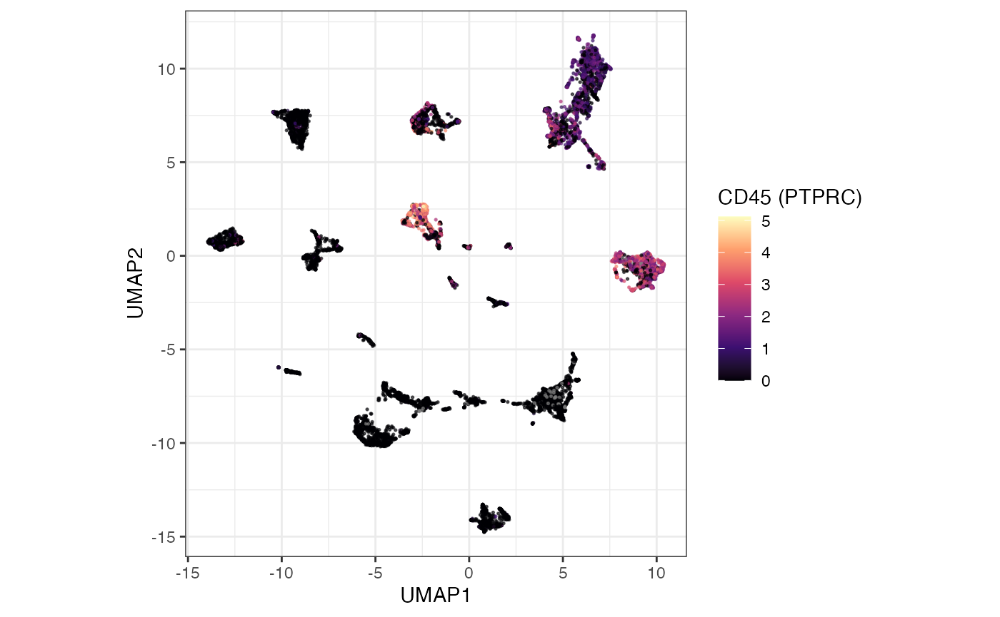
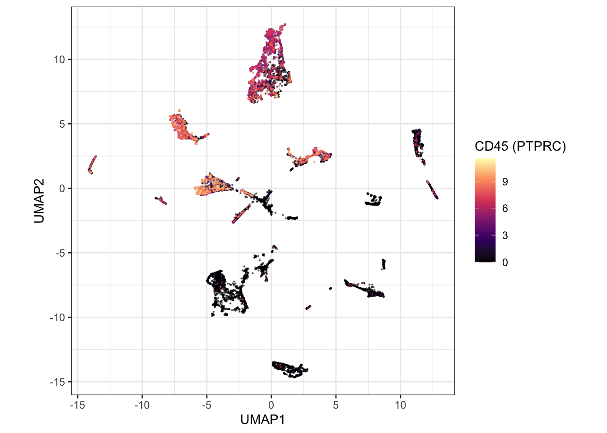
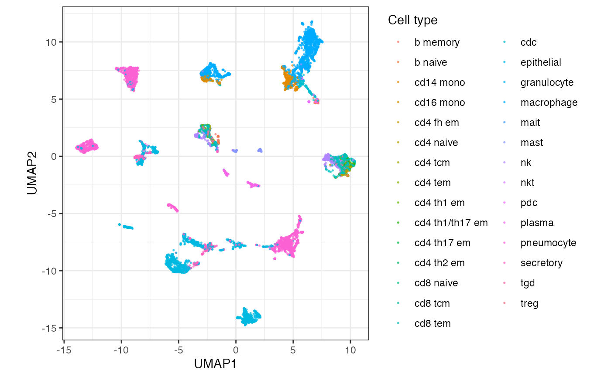

Continue in the session from Query the atlas. This block downloads a capped SingleCellExperiment, checks that immune and epithelial cells separate, and shows the same cells as a Seurat object.
library(cellNexus)
library(cellNexusWorkshop)
library(dplyr)
library(ggplot2)
library(scater)
library(scran)
library(harmony)
library(SingleCellExperiment)
library(tidySingleCellExperiment)
if (!exists("obs_lung")) {
dataset_ids <- respiratory_dataset_ids()
cell_types_query <- c(immune_cell_types(), epithelial_cell_types())
obs_lung <- get_metadata() |>
keep_quality_cells() |>
dplyr::filter(
dataset_id %in% dataset_ids,
cell_type_unified_ensemble %in% cell_types_query,
age_days >= 365,
age_days < 80 * 365
) |>
join_census_tissue() |>
annotate_cell_nexus(min_cells_per_sample = 50)
}Download a SingleCellExperiment
get_single_cell_experiment() reads the count matrices
for the cells in a metadata table and returns one
SingleCellExperiment. The workshop cap keeps the download
inside a session. The example figures on this site use 12,000 cells. Set
CELLNEXUS_WORKSHOP_MAX_CELLS=12000 before this chunk to
match them.
Cells are subsampled within sample, and the number of samples is capped, so a few large libraries do not dominate the highly variable genes.
max_cells_qc <- as.integer(Sys.getenv("CELLNEXUS_WORKSHOP_MAX_CELLS", "4000"))
cells_per_sample_qc <- 80L
n_samples_qc <- max(1L, max_cells_qc %/% cells_per_sample_qc)
set.seed(42)
samples_qc <- dplyr::distinct(obs_lung, sample_id)
samples_qc <- dplyr::slice_sample(samples_qc, n = min(n_samples_qc, nrow(samples_qc)))
sampled_qc <- obs_lung |>
dplyr::semi_join(samples_qc, by = "sample_id") |>
dplyr::group_by(sample_id) |>
dplyr::slice(sample.int(dplyr::n(), min(cells_per_sample_qc, dplyr::n()))) |>
dplyr::ungroup()
sce_qc <- sampled_qc |>
get_single_cell_experiment(assays = "counts") |>
logNormCounts()
sce_qc## # A SingleCellExperiment-tibble abstraction: 11,987 x 46
## # Features=16315 | Cells=11987 | Assays=counts, logcounts
## .cell observation_joinid dataset_id sample_id donor_id feature_count age_days
## <chr> <chr> <chr> <chr> <chr> <int> <int>
## 1 29_1 C2v>l0_YWj 2adb1f8a_~ fbd957e8~ Donor23 26405 16790
## 2 699_2 eb&0;%#_?D 093d3bfe_~ 0ce45088~ A40 33145 23360
## 3 638_2 dK=2kQdg$k 093d3bfe_~ 5b82978f~ A48 33145 23542
## 4 632_2 VPz4bhv{Kg 093d3bfe_~ 5ee73982~ A37 33145 21535
## 5 645_2 rqQvRvB{Of 093d3bfe_~ 5ee73982~ A37 33145 21535
## 6 650_2 PwHXYWv74~ 093d3bfe_~ 5ee73982~ A37 33145 21535
## 7 283_2 3<IN)dSug5 093d3bfe_~ 60197164~ A26 33145 27375
## 8 288_2 yiwH8cN91Z 093d3bfe_~ 60197164~ A26 33145 27375
## 9 289_2 vVY?$M0^J8 093d3bfe_~ 60197164~ A26 33145 27375
## 10 129_2 cK(Q>qOqbP 093d3bfe_~ 67aafc07~ A37 33145 21535
## # i 11,977 more rows
## # i 39 more variables: nFeature_expressed_in_sample <int>, nCount_RNA <dbl>,
## # empty_droplet <lgl>, cell_type_unified_ensemble <chr>, is_immune <lgl>,
## # subsets_Mito_percent <int>, subsets_Ribo_percent <int>,
## # high_mitochondrion <lgl>, high_ribosome <lgl>, alive <lgl>,
## # scDblFinder.class <chr>, file_id_cellNexus_single_cell <chr>,
## # file_id_cellNexus_pseudobulk <chr>, count_upper_bound <dbl>, ...With tidySingleCellExperiment loaded, the object prints
as a tibble and accepts dplyr verbs and
ggplot2. The underlying assay is unchanged.
sce_qc |>
dplyr::count(cell_type_unified_ensemble, sort = TRUE)## # A tibble: 29 x 2
## cell_type_unified_ensemble n
## <chr> <int>
## 1 pneumocyte 2899
## 2 epithelial 2656
## 3 macrophage 2378
## 4 cd14 mono 653
## 5 cd8 tem 582
## 6 nk 559
## 7 secretory 527
## 8 plasma 342
## 9 cdc 197
## 10 mast 186
## # i 19 more rowsIntegrate studies and colour by CD45
Highly variable genes are selected per sample
(modelGeneVar(block = sample_id)), so genes that vary
within a donor rank above genes that merely differ between libraries
(Lun et al. 2016). Harmony then removes
the study axis from the PCA (Korsunsky et al.
2019). The UMAP is drawn from that embedding.
CD45 (PTPRC, Ensembl ENSG00000081237) marks
haematopoietic cells independently of the harmonised label. After
Harmony, immune cells should sit in the high-CD45 region and epithelial
cells in the low-CD45 region.
hvgs_qc <- sce_qc |>
modelGeneVar(block = sce_qc$sample_id) |>
getTopHVGs(n = 2000)
sce_qc <- sce_qc |>
runPCA(ncomponents = 30, subset_row = hvgs_qc) |>
RunHarmony(
group.by.vars = "dataset_id",
dims.use = 1:30,
verbose = FALSE,
reduction.save = "HARMONY"
) |>
runUMAP(dimred = "HARMONY", n_neighbors = 15)
cd45_id <- c(
grep("^ENSG00000081237(\\.|$)", rownames(sce_qc), value = TRUE),
intersect("PTPRC", rownames(sce_qc))
)
if (length(cd45_id)) {
sce_qc$cd45 <- as.numeric(logcounts(sce_qc)[cd45_id[[1]], ])
} else {
sce_cd45 <- sampled_qc |>
get_single_cell_experiment(assays = "counts", features = "ENSG00000081237")
sce_qc$cd45 <- NA_real_
i <- match(colnames(sce_qc), colnames(sce_cd45))
sce_qc$cd45[!is.na(i)] <- log1p(
as.numeric(SummarizedExperiment::assay(sce_cd45, "counts")[1, i[!is.na(i)]])
)
rm(sce_cd45)
}
sce_qc |>
ggplot(aes(UMAP1, UMAP2, colour = cd45)) +
geom_point(size = 0.3, alpha = 0.6) +
scale_colour_viridis_c(option = "magma") +
coord_equal() +
theme_bw() +
labs(colour = "CD45 (PTPRC)")

Example Harmony UMAP, coloured by CD45. Immune cells occupy the high-CD45 region and epithelial cells the low-CD45 region.
The same grammar colours the embedding by the harmonised label.
sce_qc |>
ggplot(aes(UMAP1, UMAP2, colour = cell_type_unified_ensemble)) +
geom_point(size = 0.3, alpha = 0.6) +
coord_equal() +
theme_bw() +
labs(colour = "Cell type")
Exercise 4. Colour the same UMAP by
dataset_id. After Harmony, study identity should be mixed within a cell-type region. Islands that follow study boundaries are under-correction. Harmony adjusts the embedding used for the picture. It does not adjust the counts, so the models in the next two articles still includedataset_id.
Solution
sce_qc |>
ggplot2::ggplot(ggplot2::aes(UMAP1, UMAP2, colour = dataset_id)) +
ggplot2::geom_point(size = 0.3, alpha = 0.6) +
ggplot2::coord_equal() +
ggplot2::theme_bw()Mixing of colours inside a cell-type region is the pattern you want
after Harmony. A region painted by a single study is under-correction.
The expression model still includes dataset_id, because the
counts were not adjusted.
Exercise 5. Using
sce_qc, count cells percell_type_unified_ensemble. Which ofimmune_cell_types()are missing from this subsample, and what does that imply for a composition estimate built from these cells alone?
Solution
library(cellNexusWorkshop)
sce_qc |>
dplyr::count(cell_type_unified_ensemble, sort = TRUE)
setdiff(immune_cell_types(), unique(sce_qc$cell_type_unified_ensemble))Labels missing from this subsample are absent because of the cap, not
because they are absent from obs_lung. Composition in the
next article is fit on obs_lung, which keeps every cell of
every retained sample. Fitting sccomp on
sce_qc would estimate the subsample.
The same cells as a Seurat object
get_seurat() is
get_single_cell_experiment() followed by the Seurat
conversion. Pass a small metadata table. A handful of cells spread
across many files downloads a handful of files.
library(tidyseurat)
one_study <- obs_lung |>
dplyr::filter(dataset_id == dplyr::first(dataset_id)) |>
dplyr::slice_head(n = 100)
seurat_demo <- one_study |>
get_seurat(assays = "counts")
seurat_demo## # A Seurat-tibble abstraction: 100 x 50
## # Features=33145 | Cells=100 | Active assay=counts | Assays=counts
## .cell orig.ident nCount_originalexp nFeature_originalexp observation_joinid
## <chr> <fct> <dbl> <int> <chr>
## 1 495_1 SeuratProj~ 9963. 426 )>te!b8pEJ
## 2 569_2 SeuratProj~ 9985. 566 %=xI5jRY4?
## 3 924_3 SeuratProj~ 9974. 1531 !`&!Q3~>-J
## 4 913_3 SeuratProj~ 9961. 1771 $xhxN?oF#O
## 5 899_3 SeuratProj~ 9975. 2122 $|c|J0Wj}b
## 6 909_3 SeuratProj~ 9954. 1008 %E}fsQ09Os
## 7 902_3 SeuratProj~ 9953. 1700 *^ZXM4fn=C
## 8 921_3 SeuratProj~ 9976. 2089 +}>sX{6y5h
## 9 2273_4 SeuratProj~ 10000. 519 !2%6tGB!1M
## 10 2418_4 SeuratProj~ 9970. 548 #hf4{^>7WI
## # i 90 more rows
## # i 45 more variables: dataset_id <chr>, sample_id <chr>, donor_id <chr>,
## # feature_count <int>, age_days <int>, nFeature_expressed_in_sample <int>,
## # nCount_RNA <dbl>, empty_droplet <lgl>, cell_type_unified_ensemble <chr>,
## # is_immune <lgl>, subsets_Mito_percent <int>, subsets_Ribo_percent <int>,
## # high_mitochondrion <lgl>, high_ribosome <lgl>, alive <lgl>,
## # scDblFinder.class <chr>, file_id_cellNexus_single_cell <chr>, ...tidyseurat gives that object the same tibble interface
you just used on the SingleCellExperiment. The rest of the workshop
stays with SingleCellExperiment, because the pseudobulk tools speak that
language.
Next: Compositional analysis.